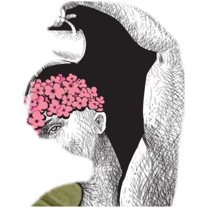

Index
Les catégories, par questions.
Le même sommaire que le site, sans pastilles ni symboles. Chaque image indique le sujet du domaine.

Socles de la discipline
Méthode, histoire, pensée, groupe.
Fondamentaux et méthodesQu'est-ce que la psychologie, et comment on l'étudie.

Histoire et grands courantsDe la philosophie antique à la science de l'esprit.

Psychologie cognitivePercevoir, mémoriser, raisonner.

Psychologie socialeCe que le groupe fait à la pensée et à l'action.

La personne
Développement, personnalité, émotions, cerveau.

DéveloppementDe la petite enfance au grand âge.

PersonnalitéTraits, intelligence, volonté.

Émotions et motivationRessentir, désirer, agir.

NeurosciencesLe cerveau au service de l'esprit.

Souffrance et soin
Comprendre sans stigmatiser.
PsychopathologieLa souffrance psychique, sans étiquette facile.

ThérapiesLes grandes façons de soigner l'esprit.

La vie quotidienne
Bien-être, travail, école, santé, justice, animal.
Psychologie positiveLa science du bien vivre.
Travail et organisationsMotivation et vie au travail.

ÉducationComment on apprend vraiment.
SantéCorps, stress et maladie.

Psychologie légaleTémoignage, crime, expertise.

Psychologie comparéeCe que les animaux montrent de l'esprit.

Frontières
Culture, langage, mesure, écrans, âge, politique.
InterculturelUniversel et culturel.

LangageParler, comprendre, apprendre une langue.
PsychométrieMesurer l'invisible.

SportPréparation mentale et pression.

ConsommationDécider, acheter, être influencé.

NumériqueÉcrans, attention, réseaux.
ÉvolutionPourquoi l'esprit a cette forme.

VieillissementCe qui tient, ce qui change.
EnvironnementLieux, nature, éco-anxiété.

Politique et croyancesIdées, polarisation, esprit critique.

Science psychologiqueCe que les tests du cerveau permettent vraiment.